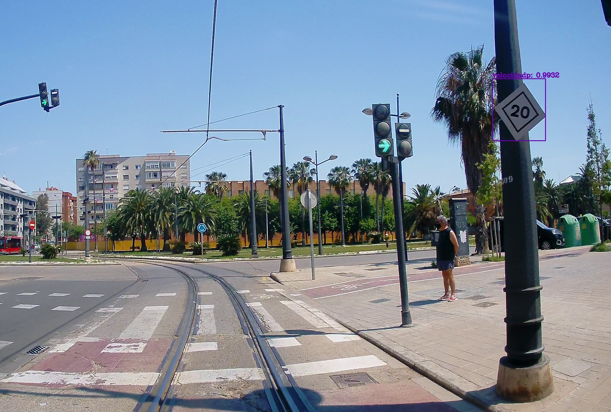

YOLO Based Approach for Railway Sign Detection
This time, my role was to automate Railway Sign Inventory generation. One of the most important tasks was to detect and classify signs from a huge number of videos. Therefore, I decided to take advantage of YOLO.
YOLO (You only look once) is an algorithm that implements neural networks to provide object detection from images, videos or even real-time cameras. This algorithm is characterised by its precision and agility.
In order to exploit YOLO power, good dataset preparation is required. Therefore, my first task was dataset preparation for almost 40 clases (40 different signs). This was painstaking work but really imprescindible. The model learns from what is feeded.
Finally, YOLO was set up with darknet, compiled with GPU and OPENCV enabled. In Figure below, you can see an example of detecting a railway sign from a test dataset (the dataset not seen by the model).
